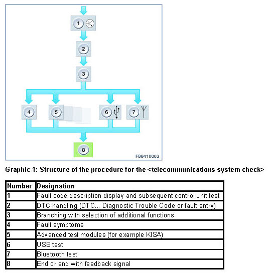

General Notes on the Diagnosis of the Telecommunications System
General Notes On The Diagnosis Of The Telecommunications System
General notes on the diagnosis of the telecommunications system
This document describes the procedure for the [telecommunications system check].
This procedure is valid for the diagnosis of the following systems:
- ULF-SBX interface box
- ULF-SBX-H interface box
- TCU Telematic Control Unit
- CBX-MEDIA Combox Multimedia
- CBX-ECALL Combox emergency call
- Integrated telephone features in the headunit
Structure of the procedure

The procedure for the [telecommunications system check] starts with the display of the fault code descriptions. A control unit test is performed following this display. This control unit test is used to determine the current system status. The control unit test runs in the background.
The fault memory for the currently installed control units is read out after the control unit test. The procedure is continued with the handling of the currently available fault code entries.
After processing of the fault code entries, a selection structure is displayed that offers the following options (depending on the control unit or vehicle equipment):
- Fault symptoms
The functional description contains the known fault symptoms for the installed telephone system. Within the functional description, hyperlinks can be used to navigate between the individual topics. Additional information, such as the part number or Bluetooth status, are displayed in the procedure.
Note on the display of the optional equipment installed in the vehicle: Optional equipment numbers can be entered at the menu item "Show vehicle data". These are then automatically checked and flagged as "installed" or "not installed".
- Further procedures
The advanced test modules deal with special functions of the control units, such as KISA (customer-initiated software update).
- USB test and Bluetooth test
The USB test and the Bluetooth test are available in the procedure as integrated checks. To access these tests, the IMIB must be logged on in the network and connected with the ISID. The tests run automatically; it is no longer necessary to manually carry out the tests directly on the IMIB.
After all relevant test steps have been executed, the procedure can be ended or ended with a feedback signal.
Select the corresponding identified fault cause here and the corresponding diagnosis code is displayed.
The procedure for the [telecommunications system check] is extended continuously and the contents of the DTC procedures and the fault symptoms are updated regularly.